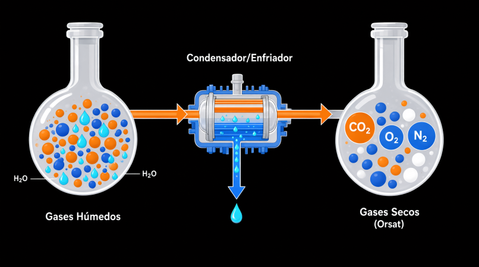
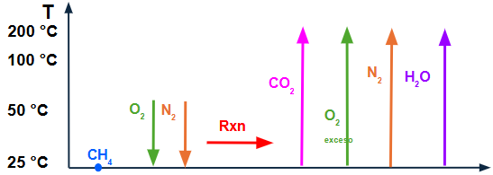

COMBUSTIÓN: BALANCES DE MASA Y ENERGÍA
Guía interactiva paso a paso. Supera los retos de ingeniería.
Prof. Juan Velasco Colan | 2026-2
Fundamentos de la Combustión
En la industria, la combustión no es solo "quemar". Es la base de la generación de energía. Para modelarla, usamos el Análisis Orsat, que mide los gases de combustión en Base Seca (sin contar el H₂O, ya que se condensa en el equipo de medición).

- Aire Teórico: Oxígeno exacto para combustión completa (C → CO₂, H → H₂O).
- Aire en Exceso: Aire adicional para garantizar que todo el combustible reaccione.
- Composición del Aire: 21% O₂ y 79% N₂ en moles (1 mol O₂ arrastra 3.76 moles de N₂).
Validación de Concepto
1. ¿Por qué las normativas de emisiones (ECA) suelen expresarse en "Base Seca" (Orsat)?
Explicación del Paso 1
Respuesta: opción b). El análisis Orsat se reporta en base seca porque la cantidad de vapor de agua en los humos depende de la humedad del combustible y del aire (que varían constantemente). Si se midiera en base húmeda, la concentración de contaminantes como CO₂ o SO₂ quedaría "diluida" por el agua y no reflejaría la contaminación real.
Problema Base: Combustión de Metano
Se queman 100 kmol de CH₄ con 1500 kmol de Aire seco (21% O₂, 79% N₂). Asumimos combustión completa:
CH₄ + 2 O₂ → CO₂ + 2 H₂O
- O₂ teórico necesario = 100 kmol CH₄ × 2 = 200 kmol O₂
- O₂ que entra = 1500 × 0.21 = 315 kmol O₂
- N₂ que entra = 1500 × 0.79 = 1185 kmol N₂
Cálculo de Salida
1. ¿Cuántos kmol de O₂ salen en los humos y cuál es el % de exceso de aire?
Solución del Paso 2
O₂ de salida: Entra 315 - Consume 200 = 115 kmol.
% Exceso de Aire: \(\frac{\text{O}_2 \text{ entra} - \text{O}_2 \text{ teórico}}{\text{O}_2 \text{ teórico}} \times 100 = \frac{315 - 200}{200} \times 100 = \textbf{57.5\%}\)
Reto: Del Resultado a la Entrada
El analizador Orsat de la chimenea reporta que los gases secos contienen 8.21% de O₂. Se queman los mismos 100 kmol de CH₄. NO conocemos el flujo de aire suministrado.
Desafío de Cálculo
1. Resolviendo el balance, ¿cuál es el flujo total de aire suministrado \(A\)?
Desglose del Sistema de Ecuaciones
Sea \(A\) = kmol de aire suministrado.
- O₂ que entra = \(0.21 A\)
- N₂ que entra (y sale) = \(0.79 A\)
- CO₂ que sale = 100 kmol (por balance de C)
- O₂ que sale = \(0.21 A - 200\) (el que entra menos el que consume la reacción)
Total de gases secos a la salida:
\( \text{Total}_{seco} = \text{CO}_2 + \text{O}_{2,sale} + \text{N}_{2,sale} \)
\( \text{Total}_{seco} = 100 + (0.21 A - 200) + 0.79 A = A - 100 \)
Ecuación del dato Orsat (8.21% = 0.0821):
\( \frac{\text{O}_{2,sale}}{\text{Total}_{seco}} = 0.0821 \implies \frac{0.21 A - 200}{A - 100} = 0.0821 \)
Resolviendo para \(A\):
\( 0.21 A - 200 = 0.0821 A - 8.21 \)
\( 0.21 A - 0.0821 A = 200 - 8.21 \)
\( 0.1279 A = 191.79 \)
\( A = \frac{191.79}{0.1279} \approx \textbf{1500 kmol de Aire} \)
Reto: El CO Traicionero (Combustión Incompleta)
En la realidad, los quemadores no son perfectos. Supongamos que de los 100 kmol de CH₄, 90 kmol se queman completamente a CO₂, pero 10 kmol se queman incompletamente a CO.
Reacciones:
1) \( \text{CH}_4 + 2\text{O}_2 \rightarrow \text{CO}_2 + 2\text{H}_2\text{O} \) (90 kmol)
2) \( \text{CH}_4 + 1.5\text{O}_2 \rightarrow \text{CO} + 2\text{H}_2\text{O} \) (10 kmol)
Desafío de Cálculo
1. Con 1500 kmol de aire suministrados, ¿cuánto O₂ sale ahora en los humos?
Desglose del Reto
O₂ Consumido:
- Para 90 kmol a CO₂: \( 90 \times 2 = 180 \text{ kmol O}_2 \)
- Para 10 kmol a CO: \( 10 \times 1.5 = 15 \text{ kmol O}_2 \)
- Total consumido = \( 180 + 15 = 195 \text{ kmol O}_2 \)
O₂ de Salida:
Entra (315) - Consume (195) = 120 kmol de O₂.
Entalpía como Función de Estado
La entalpía (H) NO depende de la trayectoria. Como es imposible calcular la reacción a temperaturas variables directamente, inventamos una trayectoria hipotética en 3 pasos que pasa por la temperatura de referencia (25°C).

- Calor Sensible: Cambio de temperatura sin cambio de fase (\(n \cdot Cp \cdot \Delta T\)).
- Calor Latente: Cambio de fase a T constante (ej. \(\Delta H_{vap}\) del agua).
- Tablas B: Usa \(\Delta H_f^\circ\) (Formación) o \(\Delta H_c^\circ\) (Combustión). ¡OJO! En \(\Delta H_c^\circ\), el agua producto se considera líquida a 25°C.
Validación de Concepto
1. Si usas la tabla de Calor de Combustión Estándar (\(\Delta H_c^\circ\)) para calcular el \(\Delta H_{Rxn}\), ¿en qué estado físico se considera el agua producida a 25°C?
Balance de Energía: La Trayectoria de 3 Pasos
Usamos los 100 kmol de CH₄. El aire entra a 50°C, los productos salen a 200°C.
Datos (del PDF): \(\Delta H_c^\circ(\text{CH}_4) = -890,360 \text{ kJ/kmol}\). \(Cp_{\text{O}_2}=30\), \(Cp_{\text{N}_2}=29\), \(Cp_{\text{CO}_2}=40\), \(Cp_{\text{H}_2\text{O}(l)}=75.4\), \(Cp_{\text{H}_2\text{O}(g)}=34 \text{ kJ/kmol·°C}\). \(\Delta H_{vap} = 40,650 \text{ kJ/kmol}\).
El Reto del Agua (Latente + Sensible)
1. Para el paso 3 (\(\Delta H_{F2}\)), ¿cómo se calcula la entalpía de los 200 kmol de H₂O que salen como vapor a 200°C, si la tabla de combustión asume que están líquidos a 25°C?
Solución del Paso 6 (\(\Delta H_{F2}\) para el agua)
La trayectoria correcta para el agua (200 kmol) es en 3 etapas:
- Sensible líquido (25→100°C): \(200 \times 75.4 \times (100 - 25) = 1,131,000 \text{ kJ}\)
- Latente (vaporización a 100°C): \(200 \times 40,650 = 8,130,000 \text{ kJ}\)
- Sensible vapor (100→200°C): \(200 \times 34 \times (200 - 100) = 680,000 \text{ kJ}\)
Total H₂O: \(1,131,000 + 8,130,000 + 680,000 = \textbf{9,941,000 kJ}\). ¡Ignorar el calor latente es el error más común en exámenes!
Reto: Cambio de Condición de Frontera
En el problema anterior, el agua salía como vapor a 200°C. Ahora, el ingeniero de planta instala un condensador en la salida de los humos para recuperar calor. El agua ahora sale como líquido a 25°C.
Desafío de Análisis
1. ¿Cuál es el valor de \(\Delta H_{F2}\) (calentamiento de productos) específicamente para la corriente de agua en este nuevo escenario?
Desglose del Reto
Respuesta: 0 kJ.
La entalpía es una función de estado. Si la tabla de \(\Delta H_c^\circ\) asume que el agua producto está a 25°C en estado líquido, y tu condición de salida real es EXACTAMENTE esa, no hay trayectoria que calcular. \(\Delta H = H_{final} - H_{inicial} = H_{25°C, liq} - H_{25°C, liq} = 0\). Este cambio ahorra una enorme cantidad de energía que antes se "perdía" calentando y vaporizando el agua (los ~9.94 MJ calculados antes).
Impacto Real: Sostenibilidad y Normativa
Los balances no son solo números; son dinero y competitividad. Un exceso de aire mal calculado significa que estás gastando energía en calentar Nitrógeno (que no participa en la reacción) y lo estás expulsando por la chimenea.
- Ley N° 30754 (Perú): Obligación de reportar GEI (INFOCARBONO).
- CBAM (Unión Europea): A partir de 2026, gravará importaciones con alta huella de carbono. Un balance de energía optimizado es tu mejor defensa arancelaria.
Decisión de Ingeniería
1. Para reducir la huella de carbono y mejorar la eficiencia de una caldera, ¿qué acción directa se deriva de un balance de materia riguroso?
¡Módulo Completado!
Conclusión: Has demostrado que no solo sabes seguir una fórmula, sino que puedes adaptar el balance de masa y energía cuando las condiciones del proceso cambian (cálculo inverso, combustión incompleta, cambio de fase). Esta es la esencia del pensamiento ingenieril.